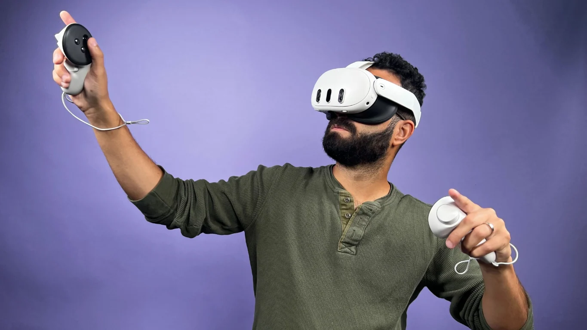

Meta Quest 3, başa takılan bağımsız bir sanal gerçeklik ve karma gerçeklik cihazı. “Bağımsız” olması, temel kullanım için oyun konsoluna ya da bilgisayara bağlanmasının gerekmemesi demek. Başlığı taktığında ya tamamen sanal bir dünyaya geçebilir ya da kameraların gösterdiği gerçek çevrenin üzerine dijital görüntüler ekleyebilirsin.
VR ile karma gerçeklik arasındaki fark nedir?
Sanal gerçeklik (VR) deneyiminde ekrandaki görüntü fiziksel çevrenin yerini alır. Bir oyunda başka bir mekânda gibi görür, başını çevirdikçe o sanal ortamın farklı yönlerine bakarsın.
Karma gerçeklik (MR) modunda ise başlığın dış kameraları çevrenin görüntüsünü ekrana aktarır. Uygulamalar bu görüntünün üzerine sanal pencereler, oyun karakterleri veya başka dijital öğeler yerleştirebilir. Bu, duvarı delip gerçek dünyayı doğrudan gördüğün anlamına gelmez: çevrenin ekrandaki kamera görüntüsüne bakarsın. Görüntü kalitesi ve algı, gerçek hayattaki çıplak gözle aynı değildir.
Ne için kullanılabilir?
- Oyun: Hareketle kontrol edilen VR oyunları ve daha geleneksel oyunların büyük sanal ekranda oynanması.
- Film ve medya: Çevrenden bağımsız, sinema perdesi hissi veren sanal ekranda video izlemek.
- Uygulamalar ve çalışma: Birden fazla sanal pencereyi çevrene yerleştirmek veya uyumlu uygulamalarda üç boyutlu içeriklerle etkileşim kurmak.
- Egzersiz ve deneyimler: Hareket etmeyi içeren oyunlar veya sanal mekân gezileri. Bunların her kullanıcı için uygunluğu ve rahatlığı farklı olabilir.
Bu örnekler cihazın neler yapabildiğini anlatır; her uygulamanın aynı kalitede olduğu veya geleneksel ekranların yerini aldığı anlamına gelmez. Bağımsız CNET incelemesi de donanımdaki iyileştirmeleri not ederken yeni uygulama ve içerik ihtiyacına dikkat çekiyor.
Quest 3 ile Quest 3S aynı ürün mü?
İsimleri benzer olsa da Meta Quest 3 ve Quest 3S ayrı modeller. Meta'nın ürün karşılaştırmasına göre Quest 3, göz başına 2064 × 2208 piksel çözünürlük ve pancake lensler kullanıyor; Quest 3S'te göz başına 1832 × 1920 piksel ve Fresnel lensler bulunuyor. Her ikisi de renkli görüntü aktarımıyla karma gerçeklik deneyimleri sunuyor. Lens türü ve görüntü netliği, ürünler arasındaki önemli farklardan biri.
Meta'nın belirttiği genel kullanım pil tahmini Quest 3 için yaklaşık 2,2 saat, Quest 3S için yaklaşık 2,5 saat. Üreticiye göre gerçek süre uygulama, ayar, kablosuz bağlantı ve pilin durumuna bağlı olarak değişir. Bu nedenle uzun seanslar planlayanların şarj ihtiyacını da hesaba katması gerekir.
Satın almadan veya kullanmadan önce bilinmesi gerekenler
Başlık, gözlerin önünde ağırlık taşır ve uzun kullanımda herkese rahat gelmeyebilir. VR'da görsel hareket ile bedenin hareket algısı uyuşmadığında bazı kişiler rahatsızlık hissedebilir; ara vermek ve kişisel konforu gözetmek önemlidir. Karma gerçeklikte kamerayla aktarılan çevre görüntüsü de gerçek görüşün bire bir karşılığı değildir.
VR oyunları için çevrede güvenli hareket alanı bırakmak, başlığı kullanırken gerçek nesnelere çarpmamak açısından önem taşır. Ayrıca satın almadan önce ilgilendiğin oyunların ve uygulamaların Quest mağazasında bulunduğunu, modelle uyumlu olduğunu ve ek hesap ya da abonelik gereksinimlerini kontrol et.
Kısaca: kimin ilgisini çekebilir?
VR oyunlarını denemek, sanal sinema ekranı kullanmak veya çevresine dijital pencereler yerleştirmeyi merak edenler için Quest 3 farklı bir bilgisayar deneyimi sunuyor. Ancak günlük telefon ya da dizüstü bilgisayarın doğrudan yerine geçmiyor; kullanım süresi, ağırlık, pil ve uygulama kütüphanesi pratik sınırlar oluşturuyor. VR'ı uzun süreli kullanıp kullanamayacağını anlamak için, mümkünse satın almadan önce kısa süre denemek iyi bir fikir.
Kaynaklar
- Meta. Compare Meta Quest headsets. Quest 3 ve Quest 3S'in ekran çözünürlüğü, lensleri, görüş alanı ve üretici pil tahminleri. Meta ürün karşılaştırması.
- Meta. Meta Quest 3. Ürünün karma gerçeklik özellikleri ve üretici açıklamaları. Meta Quest 3.
- Stein, S. (2023). Meta Quest 3 Review: Great Upgrades, but We Need More New Apps. CNET. Bağımsız editoryal inceleme; donanım ve içerik kütüphanesi değerlendirmesi. CNET incelemesi.
Teknik özellikler üreticinin açıklamalarından alınmıştır; bağımsız laboratuvar ölçümleri değildir. Pil süresi kullanım koşullarına göre değişir. Kaynaklar 8 Kasım 2026 tarihinde kontrol edildi.